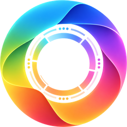

Orchestratore
Legge la richiesta e propone il piano: incarichi, fasi e criteri di riuscita.

Un piccolo team di agenti, governato, che trasforma una richiesta in un documento aziendale verificato.
Ogni agente ha un compito e permessi propri. Un controllo esterno decide quando si passa alla fase successiva, tiene il budget e chiede la tua approvazione prima di lavorare.
Legge la richiesta e propone il piano: incarichi, fasi e criteri di riuscita.
Cerca nelle fonti autorizzate e riporta le citazioni.
Scrive il documento partendo da quello che il Reader ha trovato.
Controlla il risultato con un modello diverso, in modo indipendente da chi l'ha scritto.
Orchestratore, Reader ed Esecutore lavorano su Claude; il Verificatore su un modello OpenAI.
La conversazione con il team: piano, approvazione, monitor e documento finale.
ca-cb-api.calmrock-5a1d2e24.italynorth.azurecontainerapps.io/uiPorta direttamente alla pagina di login Microsoft.
ca-cb-api.calmrock-5a1d2e24.italynorth.azurecontainerapps.io/auth/login